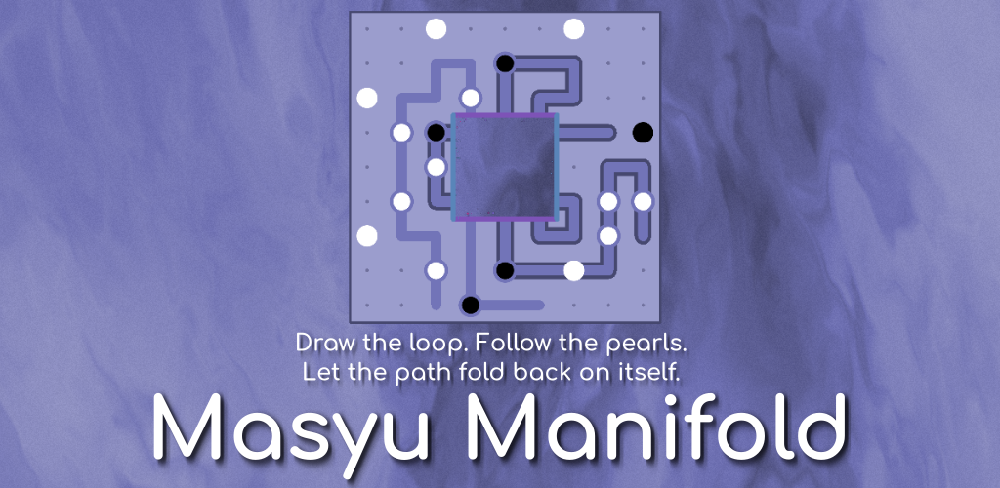
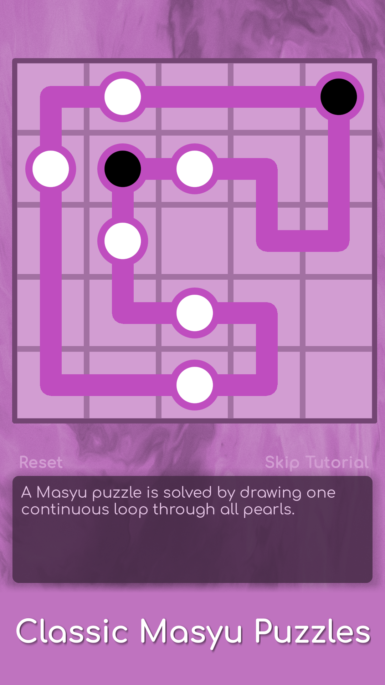
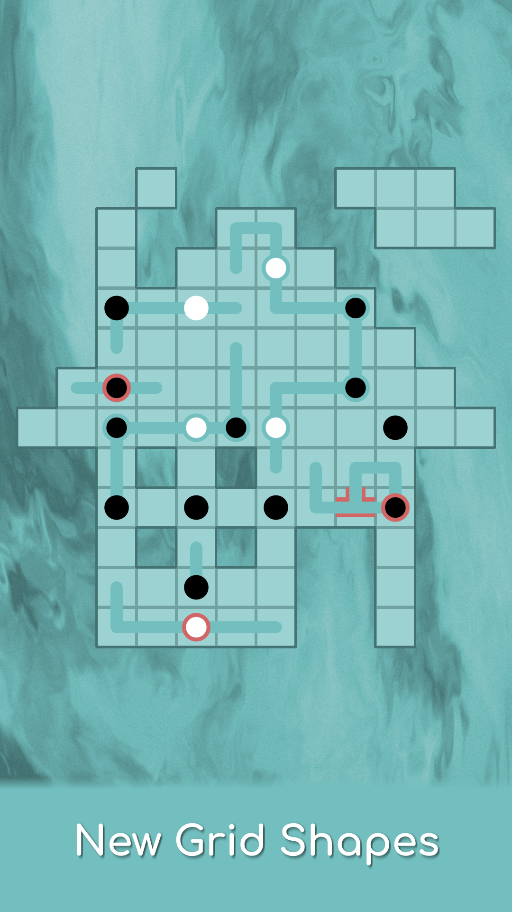
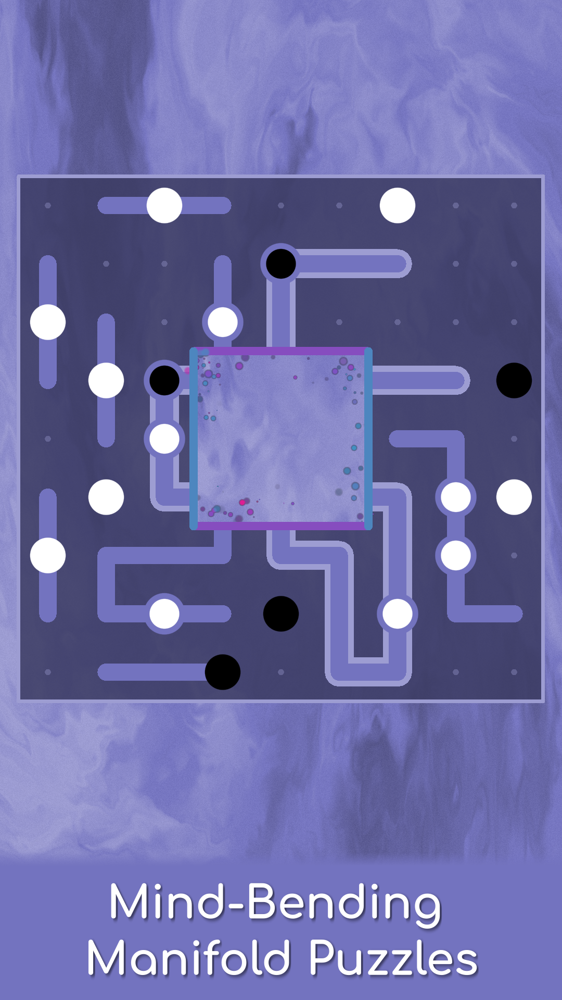
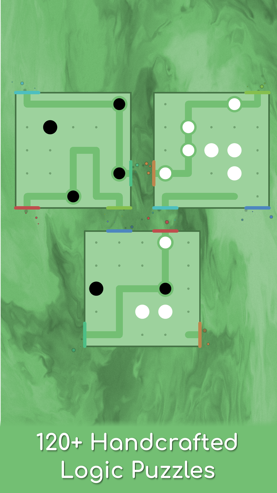
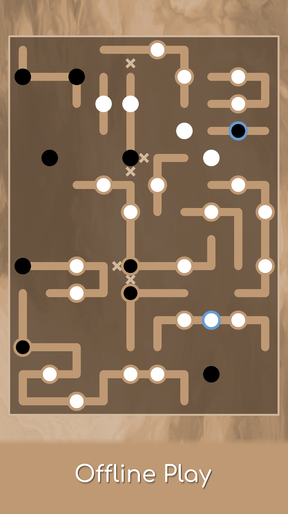
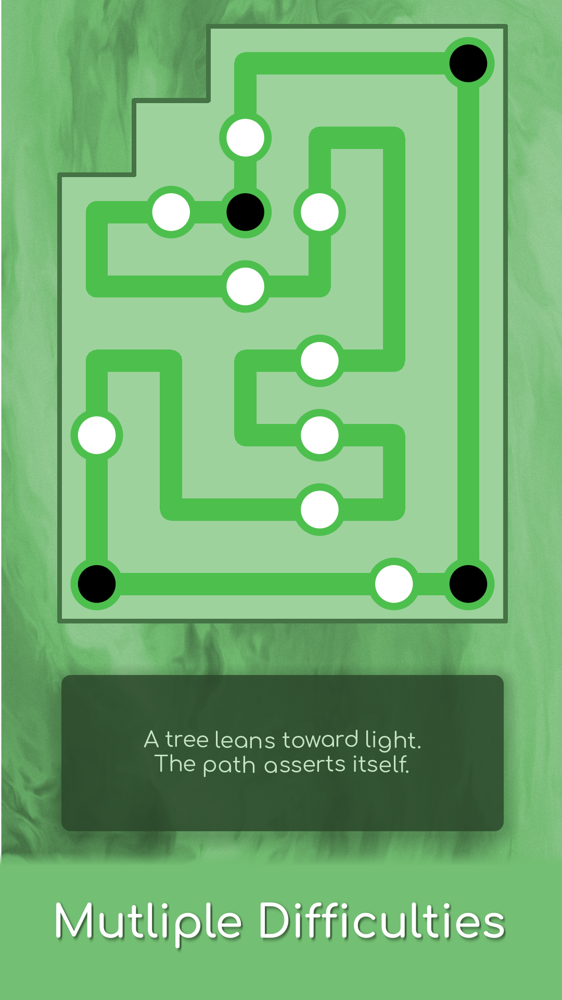
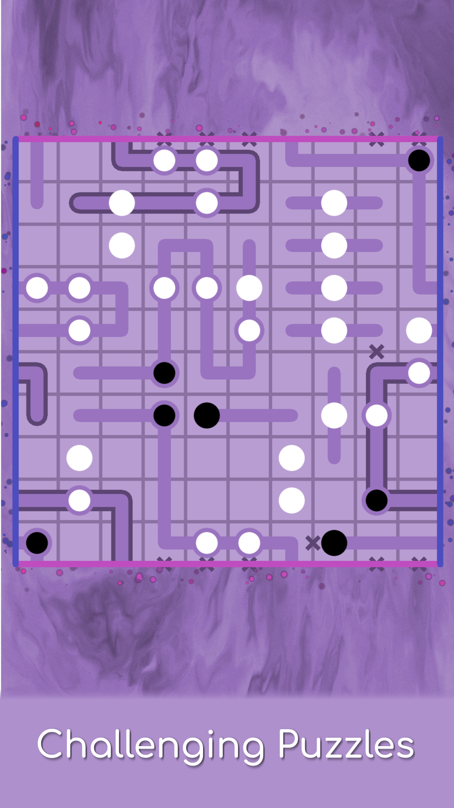
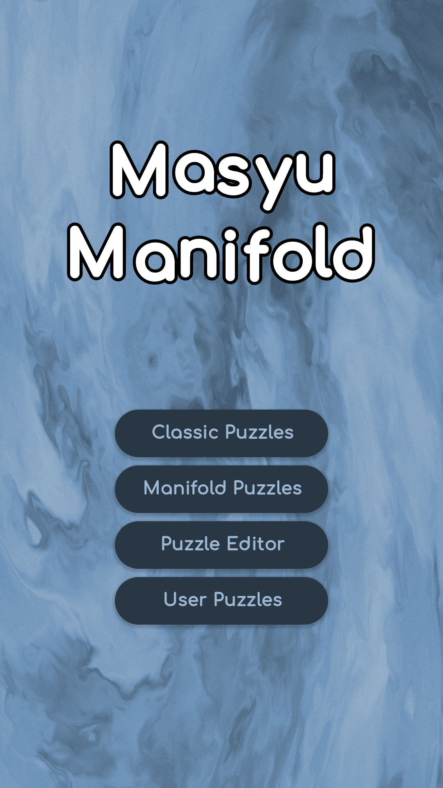

Screenshots








Masyu Manifold keeps the core rule of classic Masyu, adding custom shapes and Manifold Gates (portals) that allow the loop to leap across the board while remaining continuous. The result is a new class of mind-bending brain teasers where the loop can cross itself in ways that shouldn't be possible.
Masyu Rules
Draw a single continuous non-intersecting loop that goes through all pearls. The loop must travel straight through white pearls, turning in an adjacent cell. The loop must turn when traveling through black pearls, continuing straight on both sides. Like Sudoku, Slitherlink, or Hashi, each puzzle has exactly one solution reachable through logical deduction alone.